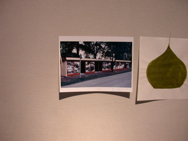
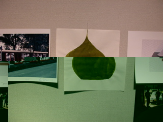
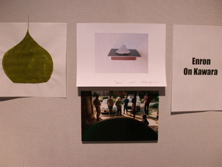
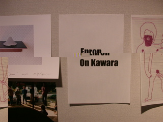
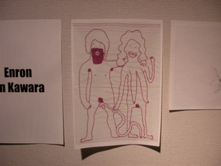
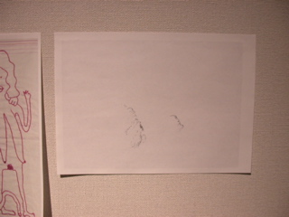
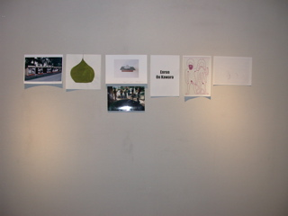

|
|
BIG IN JAPAN
I asked six artist who had already been in Japan to do a small work that I could exhibit in the Sojo Gallery in Kumamoto. These were all exhibiting or studying in Japan but this was my first time here. The exhibition BIG IN JAPAN is a part of my contribution for the exhibition PASSAGAES TO OLYMP. The artists taking part in this work are from Germany, Korea and Iceland: Daniel Behrendt, Thóroddur Bjarnason, Eva Maria Kollischan, Ulrike Schoeller, Kwanho Yuh and Michael Zwingmann.
Curated by Hlynur Hallsson
Daniel Behrendt
"Liebe" (Love), 2005
Thoroddur Bjarnason
“Enron On Kawara” 2004
Eva-Maria Kollischan
o.T., 2005
Ulrike Schoeller
“Kuppel Nr. 16” (Dome Nr. 16), 2005
Kwanho Yuh
o.T., 2005
Michael Zwingmann
“Yama”, 2005
|
 |
 Kwanho Yuh o.T., 2005 |
 Ulrike Schoeller “Kuppel Nr. 16” (Dome Nr. 16), 2005 |
 Michael Zwingmann “Yama”, 2005 |
 Thoroddur Bjarnason “Enron
On Kawara” 2004 |
 Daniel Behrendt "Liebe" (Love), 2005 |
 Eva-Maria Kollischan o.T., 2005 |
 |